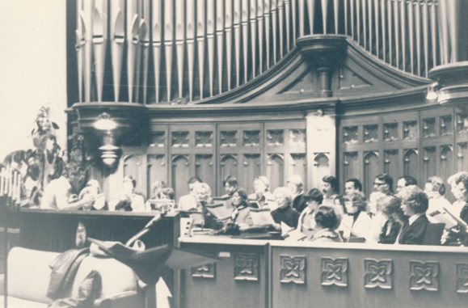

-1-MasterItem.svg)
Stories of Westminster United Church & its People / Page
146
organist, who, interestingly served as organist at New York’s Fifth Avenue
Presbyterian Church some time before our fourth minister, John Sutherland
Bonnell
served in that church as minister), Tertius Noble (English composer and
organist),
Herbert Fricker (an English organist who emigrated to Canada and became the
organist at Metropolitan Church in Toronto), Sir Ernest Willan MacMillan (well
known
Canadian organist and conductor, and the only Canadian musician to be knighted)
and Healey Willan (pictured), well know prolific Canadian composer.
The console was changed from the original to a more contemporary design
in 1951 when we redesigned the whole choir loft. (Picture below shows choir in
the loft in 1960).
When Herb Sadler died the console was dedicated to him in 1956.
Since that time the organ
(pipes, etc) has undergone four further renovations.
Music at Westminster
